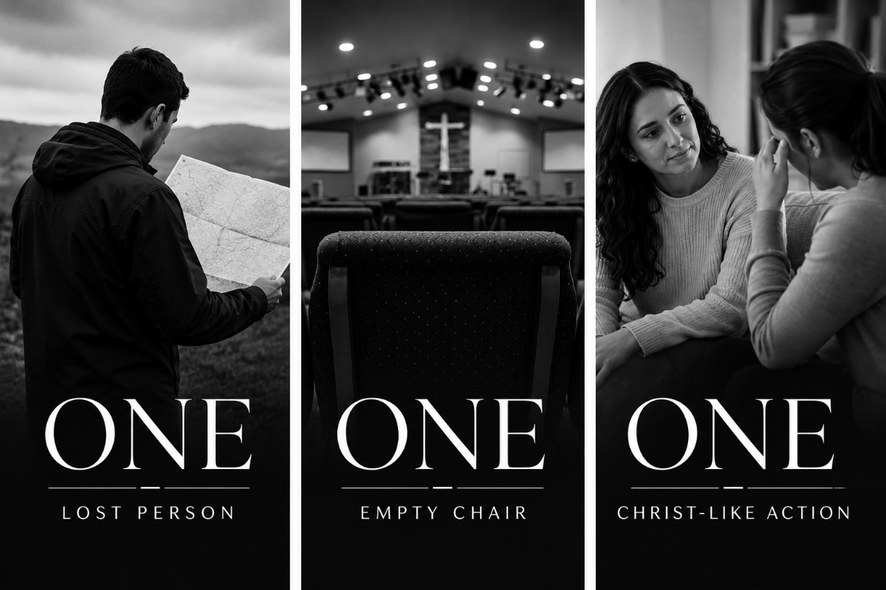

PRAYER POINTS
Prayer for our Partners
- Sims— Scott, Kelsey, Henry, Rozzie, and Wade
- Snyders — Jake, Jesse, Willa, Hattie, and Ruby
- Turners — Jared, Cameran, Silas, Eloise, and Nehemiah

As Escalate heads into its 17th year of ministry, we wanted to help create three easy to remember prayer points that we could all be praying through together.
ONE LOST PERSON
We want to encourage every person who is part of Escalate Church to be praying intentionally for someone who needs Christ — all year long.
Begin by asking the Father, "Which nonbeliever would You have me pray for, love, and serve over the course of the next 12 months?" It might be a friend, a co-worker, a neighbor, or a family member. God has placed you in the life of at least one nonbeliever and has the ability to use you mightily in that relationship.
When you have a sense of who God has placed on your heart, start praying specifically for that person:
- Would You stir in his/her heart a curiosity about Jesus?
- Would You cause him/her to have a restlessness with the things of the world?
- Would You cause him/her to have a longing in his/her heart for something more?
- Would You cause him/her to have an openness to spiritual and gospel conversations?
- Would You draw him/her to saving faith in Jesus?
ONE EMPTY CHAIR
We also want to encourage every person at Escalate to be praying each week for one empty chair in our sanctuary — that God would send someone to fill it.
There's a good chance you regularly have an empty chair near you. Envision one of those chairs and pray, "God, would You send someone to fill that empty chair near me this week?" Maybe you have someone specific in mind, or maybe you don't. Our desire is to be good stewards of the space we have and to see more and more of those empty chairs filled each week.
Ask the Father to fill that chair with a brother or sister in Christ to worship alongside — or with a nonbeliever who needs to hear the good news of salvation through faith in Jesus. Then let's be ready to welcome them!
ONE CHRIST-LIKE ACTION
Finally, we want to encourage every person at Escalate to be praying for one Christ-like action each day — that the Holy Spirit would empower you to live it out.
The Holy Spirit is actively working in the lives of those who have placed their faith in Jesus, molding and shaping them more into His image. We don't want to keep that transforming work to ourselves — we want others to see and experience Jesus through us each day. Maybe it's words you speak to someone, or an act of service you perform.
Examples of things you could pray:
- "Give me the courage to put Jesus on display through words I speak or actions I take today."
- "Help me to discern practical ways that I can live out the love of Jesus today."